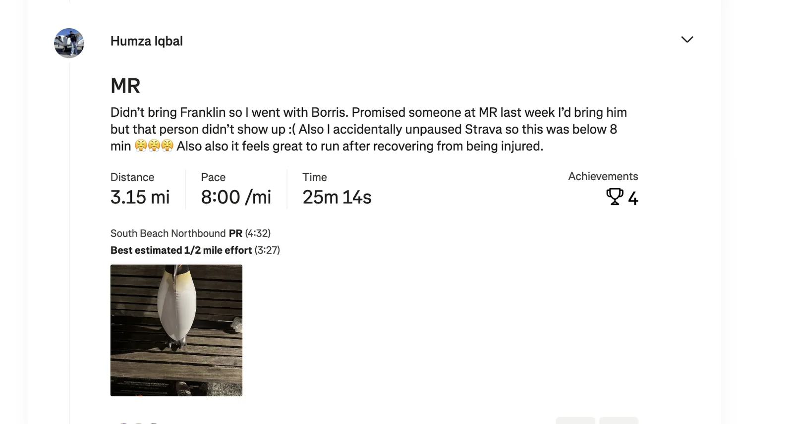
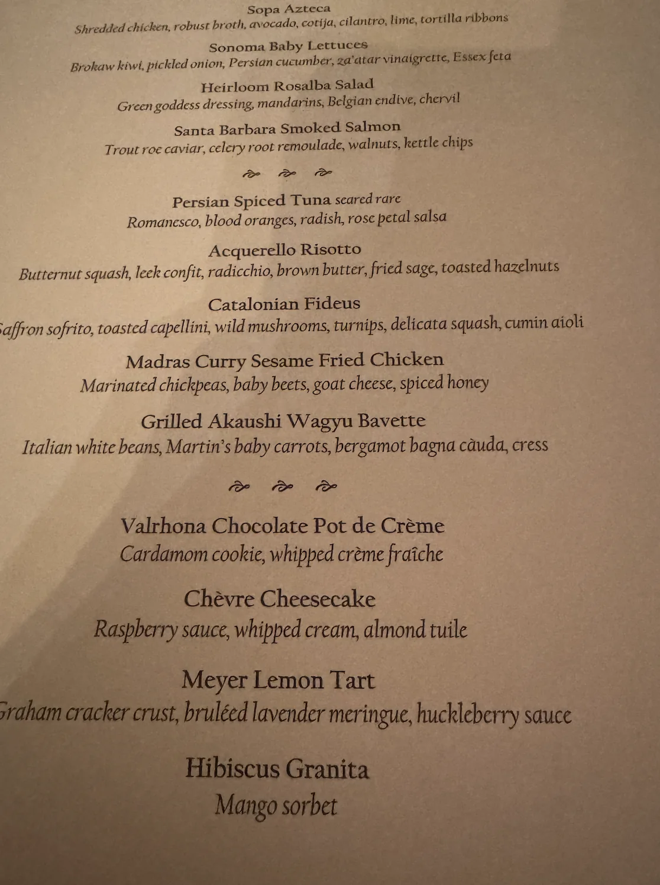
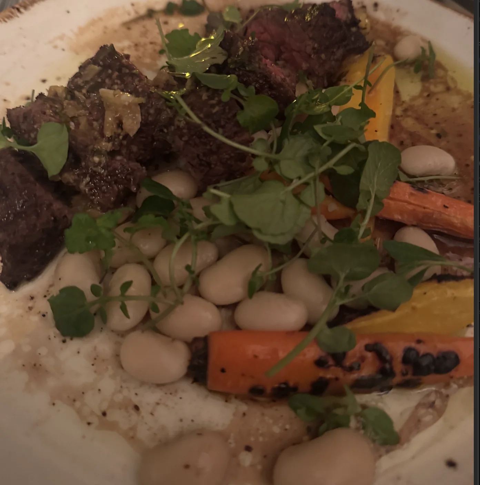
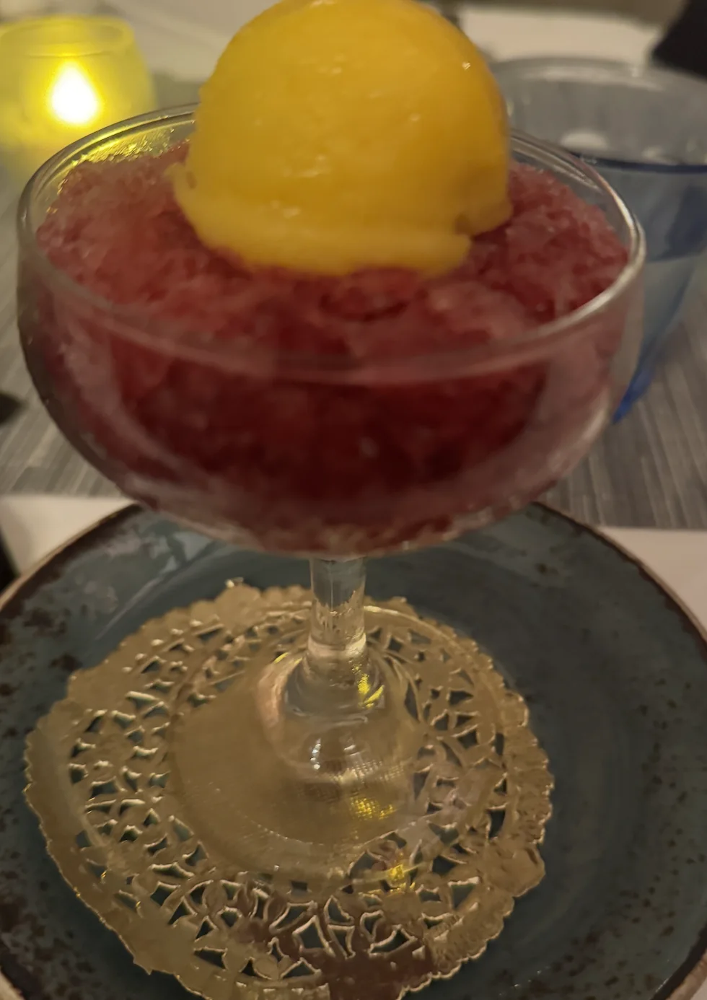
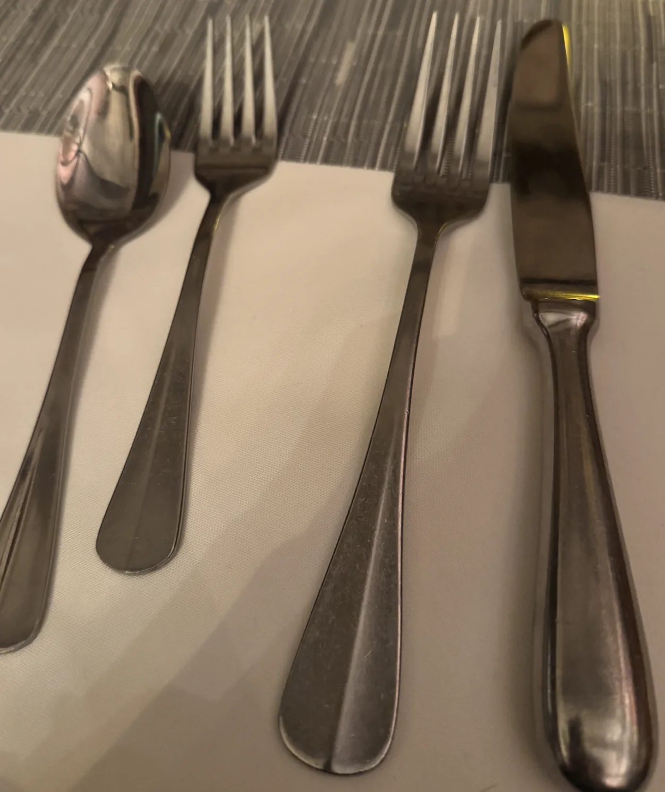
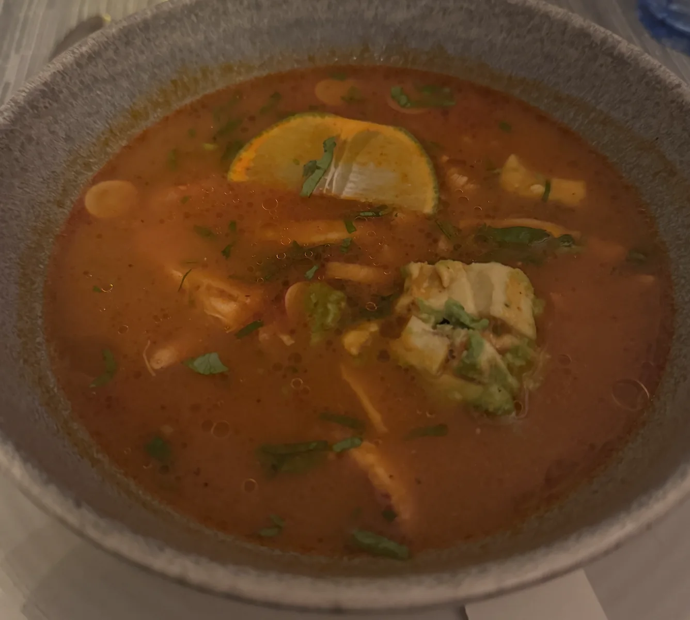
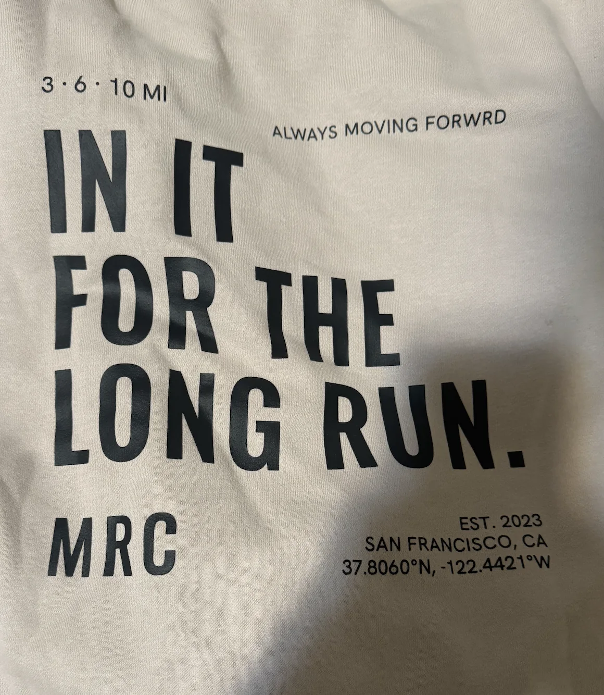
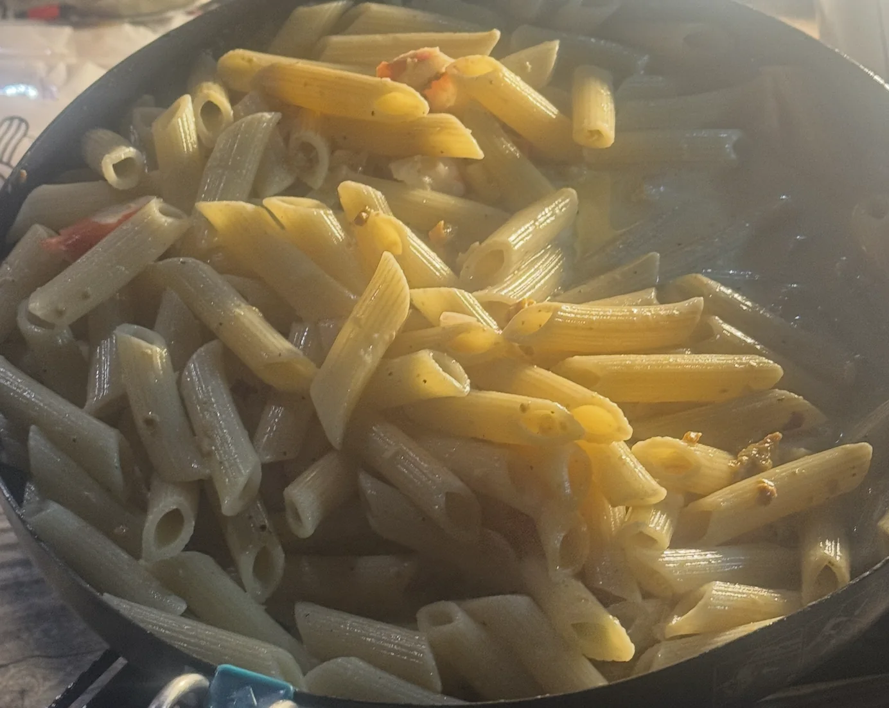

Monday
Today after work I continued my goal of treating all my friends to dinner and caught up with “La Tacquiera Royalty”! We went to Cole Valley Tavern and caught up on all manners of things from JJK, running, and a bunch more. While I’m glad I treated everyone at Kogi Gogi a while back, hanging out like this made me realize how much fun it is to catch up with people 1:1 which I haven’t been doing a lot of.
Tuesday
After my shit in the mines (I mean to say shift at first but thought it would be funnier to leave as is), I went to a Marina run club social with “Top of the Rope”. We went to a bar and all just hung out. To help us socialize there was bingo where we had to find people who did certain things or met certain conditions. Examples included “Having the same # of siblings as you,""Newest to SF,""Never had an espresso martini at Balboa cafe”. I rate the experience a solid “OK”. It was perfectly fine but for whatever reason I didn’t find many people I really clicked with. It got to the point where I was so bored I almost broke my first impression training just to give myself a sense of satisfaction. An example of such that I didn’t say but wanted to was when someone asked me if I read and I wanted to say “I’m learning to read the room”. I think that joke is reasonably funny but I knew it wouldn’t go over well. I decided instead it would be better if I just leave and chill in the Humza cave instead.
Wednesday
In the evening I went to Midnight Runners but I didn’t go alone. I brought Boris the penguin with me. Last week at MR someone said she wanted to see Boris after I mentioned him so I figured I could bring him with me. Unlike Franklin it's not as much work to explain so I figured I could even bring him to work as well. Most people enjoyed seeing an inflated penguin at my desk. My manager was a bit confused but I think it was fine.
After work I ran and finally after a couple weeks of slow runs I ran at a reasonable pace :D.

It felt great to run at a reasonable pace again! I was joined on this run by animate characters like “Sergeant Sassy” as well. I met what I believe were a bunch of Muzzies or at least people from the middle east which is relatively rare around here and warrants a note.
Thursday
Before work I went to a special volunteer trash pickup event with “The of the Rope.” Unlike most trash pickups we don’t have bags and grabbers, instead our job is to walk around and call the department of public works (colloquially known as 311ing) any big pieces of trash. For us this essentially amounted to just walking around Haight Ashbury for just under an hour which was a nice way to start the day.
After work the company went for a team dinner to celebrate something I can’t quite disclose but was super cool. We went to Foreign Cinema in the Mission. I felt like a true wealthman having such a fancy meal




This meal had two forks!

It was quite the good meal! I still maintain that the quality certainly does not scale linearly with price, perhaps logarithmically at best but the food was still great and I really like my coworkers so hanging out with them was great as well!
After dinner I went to the usual bar night with “The Philosopher,” “The Bartender,” “The Mosher,” “The Finer things,” and “That’s nuts” along with some cameo appearances from folks that I’m not close enough to to give a nickname.
Friday
To kick off the weekend I got dinner with “The Raja of Rhythm,” “The Yogi,” and a couple other friends from Mission run club. We went to a place called Roosters Peruvian Rotisserie which I highly recommend! They have some real good and real big portions of food! Afterwards we went to a couple bars and hung out.
Saturday
The day begins with Marina run club with “Top of the Rope” and her boyfriend who is visiting from the great city of Philadelphia. The run itself was good. While I was able to do the run I’ll admit it was a bit harder than Wednesday so maybe I’m not 100% recovered yet but hopefully spacing my runs out by a couple days at a time should help.
I wound up getting a big oversized sweater since apparently they were doing a merch drop that day. You didn’t even have to pay, they just handed them out. I think there is some optional membership you can pay for but they didn’t ask if I was a member, they just threw out shirts and sweaters so who am I to ask too deeply.

There was a girl I was interesting in talking to there but it was hard to get the chance to approach her since she was with her friends the whole time and I had to book it after the run to get to trash pickup.
On the way to trash pickup I learned that “Top of the Rope’s” boyfriend works at the building with the world's largest mobile which is cool. We were also talking about books and he recommended the book called “Thinking fast and Slow”. From what I gather the book breaks down two types of thinking. The first called Type 1 thinking is fast intuitive quick thinking while Type 2 is more slow methodical and deep thinking. For those in AI perhaps you can think of Type 2 thinking as thinking step by step. We think we do more Type 2 thinking than we actually do when most of our thinking is Type 1 thinking. I am actually curious so I may look into this book. He mentioned it has a bunch of research and feels more grounded than a lot of self help books which take inspiration from this book.
After the run we have trash pickup with “The Notetaker,” “Granola Girlie,” among others. I met some new people today who were both born in Japan but came to the states around high school which was cool.
Sadly I couldn’t stay at trash pickup long as I get picked up by “The Quant” to go urchin foraging with “The Fisherman,” “The Trash Queen," “Granola Girlie,” and “The Rugby Player” amongst others. I haven’t been shy about the fact that I don’t particularly like the taste of urchin so it begs the question why I decided to come along.
Back in episode 51 I had this to say about the experience
On this trip I made a discovery about myself that I have a real fear of losing my balance, slipping, and falling on rocks. While the rain boots did help my feet to not get wet they did unfortunately make moving around harder and I didn’t have as much tactile sensation in my feet which made me uneasy. Unlike the other two who took to it like a fish (urchin?) to water, I took to it more like a software engineer to water, that is to say I short circuited.
I realized I didn’t want to be afraid of this anymore so my main goal on this trip was to conquer my fear and forage the whole time and go out as far as everyone else. I’ll be honest, it was tough at first. Huge shoutout to “The Quant” for helping me out. He pointed out what rocks would make good footholds and helped me get my balance a couple times. Eventually though I managed to get the hang of it. I was still scared while doing it but not so scared that I couldn’t keep going. And in the end I made it all the way out to the main urchin foraging point.
As we were foraging I thought to myself that perhaps the thrill of making it all the way out would make some of the raw urchin taste better. Unfortunately it still tasted like Satan’s turd but nevertheless it’s the journey not the destination that counts.
Once we got back we cooked up the urchin and made some uni pasta and uni sushi. At this point I realized I wouldn’t l wouldn’t like urchin whether at a church in, if I’m searchin or even off her chin but it was still fun helping to chuck dead urchin off the rocks and lighting everything up with my great jokes and occasionally a lantern.

Later me and “The Quant” headed out and got some In-N-Out on the way back which was the perfect way to end the day!
Sunday
The day begins with the usual trash pickup. I learned one of the regular trashers does a bunch of search and rescue volunteering which was super interesting to learn about.
Tricks for searching and rescue: look up, down and all around. They could be dragged by a mountain lion. Make sure to look backwards as you are walking; you may miss something otherwise . Lots of people get lost in Marin, Santa Cruz, Sierra Nevada mountains. A perk is you can volunteer in Yosemite almost any weekend helping people with sprained tangles get down and then you get free campsite and a day to enjoy to yourself
On my bus ride back from pickup, some guy wanted to stick a match sticker in the bowl of sorbet I had. He kept trying to stick it in and I moved the bowl. Eventually he tossed a match next to me and I panicked and moved across the bus. I was a bit flustered at the moment but thankfully nothing else happened. The guy was laughing as I moved which confirmed he did this specifically to annoy me. I was tempted to go back and sit next to him to prove he couldn’t get under my skin but sadly I couldn't quite do it.
Later in the day I had dinner with “The Raja of Rhythm”. We went to an Uzbek place called Sofiya which is really good!! I *HIGHLY* recommend it (it’s the kind of place I could never leave a Yelp review for :D). Talking with him made me realize I need to up my AI tool usage and stop using an IDE like Cursor and go all the way and try Codex or Claude Code. I’m excited to start them tomorrow.
On my way back home I had a brief run-in with “The Filmmaker" who mentioned the film he’s been working on is almost done. I’m really excited to see it once it’s finished! Once I got home I just chilled and wrote up the newsletter.